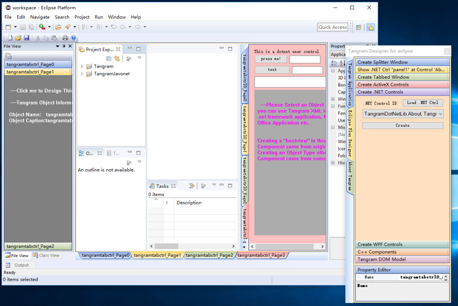

当我们谈起被称之为 “经典” 的那些技术，我们内心充满着感激、忐忑与敬畏……
科技发展的不同阶段，都会存在对应时代的经典之笔，以点缀那个时代的精彩。经典之所以被称之为“经典”，不仅仅是因为其价值本身，
同时还意味着一种特定时期产生的深远影响……。我们应该怎样表达对经典的敬畏？
让经典顺应时代的节奏得以传承 或许是向经典致敬的一种方式……。
我们很幸运，因为我们受益于大量的经典之作，是造就经典的那些人、那些成果让我们看得更远，激励我们不断的创造…… 。
Web Runtime的核心使命是揭示Win32桌面应用存在强大的互联网基因，这个互联网基因 取决于Windows窗口的几何位置表现 ，与具体的软件设计目标没有关系。
按照我们这里给出的步骤，您可以对已存在的应用做适当的调整，即可使得一个桌面应用拥有极为强大的互联网适配能力，这里的步骤非常简单，对已有应用系统的源代码修改量极小，从这个意义上看，一个系统内置的互联网适配能力，与具体的软件结构关系不大。Web Runtime不支持那些基于CEF、WebView2技术的软件系统。
MFC Web Runtime工程需要修改的基类
.NET Web Runtime工程需要建立的引用
App类 的基类 ：
CWinApp(Ex) 修改为: CWebRTApp(Ex)
MDI应用之中 主窗口类的基类 ：
CMDIFrameWndEx 修改为: CWebRTMDIFrame
在工程文件夹 中找到reactor.dll，引用reactor.dll
MFC Web Runtime工程代码修改的基本环节
.NET Web Runtime工程代码修改环节
MFC Tabbed MDI Documents 应用，
BEGIN_MESSAGE_MAP(CMainFrame, CMDIFrameWndEx);
修改为:
BEGIN_MESSAGE_MAP(CMainFrame, CWebRTMDIFrame);
MFC 对话框 应用：
App类的InitInstance()函数返回值修改为true
CFormView OnInitialUpdate() 函数体中:
删除ResizeParentToFit()调用。
CView 派生类对象作为扩展Web DOM 元素:
在App类的InitInstance()函数的开始部分，按如下规则建立一个“CString-CView”映射表：
m_mapDOMObj[_T("some_name")] = RUNTIME_CLASS(CXXXView);
CDocument 序列化 支持,Serialize(CArchive& ar)函数实现中增加代码块:
if (ar.IsStoring()){
ar << theApp.GetDocTemplateID(this);
// TODO: add storing code here
}
else
{
ar >> theApp.m_strCreatingDOCID;
// TODO: add loading code here
}
在.NET工程之中找到 Main函数， 然后将：
Application.Run
替换为:
Universe.Cosmos.Run
参数不变。
准备工作
下载 二进制开发包
访问Web Runtime的Git站点，下载开发所需的必要开发包以及文档
Common Web Runtime constructs a new mixed world of native UI elements and web elements.
In this world, a new web page is defined. While taking into account the standard web page,
the ability to use native components as DOM elements is added ...
WebRuntime的桌面应用新 世界
Common Layout Engine Common Layout Engine是一个多层次、网格化、可嵌套、易于描述的UI布局描述引擎。
所谓网格 ，是一个m行n列的窗口矩阵（1行n列的网格可以理解为有n个选项卡的选项卡窗口 ），
而可嵌套是指矩阵中的每个“格”可以动态嵌套多个网格层，运行时只有一层可见。
一般说来，某个布局在设计时可能是不确定的，并且可以在运行时动态生成，由于不同的场景、权限等因素，
可能会进行不同的动态匹配。实际上，柔性布局是多层网格动态变化的结果。
网格有两种描述方式：其一是基于XML，这样的描述可以用于各种编程语言；其二是基于Web页面的
DOM元素，这个方案的优势是易于与主流的互联网技术衔接。
编译配置
Web Runtime只提供
X64支持，所以所有的编译模式（Debug、Release）都只支持X64。
配置编译模式为64位编译
按如图所示配置C++/MFC工程的编译模式，Debug、Release都需要正确配置编译模式为X64。
按如图所示配置.net工程的编译模式，Debug、Release都需要正确配置编译模式为X64
Manifest配置
对每一个支持Web Runtime服务的桌面应用，正确配置Manifest编译开关是不可忽略的重要步骤。
对.NET以及C++开发者而言，建议阅读相关文档，以便深入理解Manifest配置。
我们这里给出具体配置Manifest的步骤，需要的app.manifest文件在DotNetPlus以及MFCPlus文件夹之中。
配置Manifest
按如图所示配置C++/MFC工程的manifest配置项，mfcapp.manifest包含于MFCPlus文件夹，强调的是Debug、Release都需要正确配置manifest。
按如图所示配置.net工程的Manifest配置项，app.manifest包含于DotNetPlus文件夹配置
编译输出路径
Web Runtime运行时支持包 要复制到这个路径指定的文件夹，以确保编译之后的可执行文件正常运行。
配置编译输出路径
按如图所示配置C++/MFC工程的编译输出路径，Debug、Release都需要正确配置编译输出路径。
按如图所示配置.net工程的编译输出路径，Debug、Release都需要正确配置编译输出路径
MFC桌面应用工程基类修改 以及工程代码调整规则
MFC应用中基类调整规则
App类 的基类 ：
CWinApp(Ex) 修改为: CWebRTApp(Ex)
MDI应用之中 主窗口类的基类 ：
CMDIFrameWndEx 修改为: CWebRTMDIFrame
MFC应用代码调整 规则
MFC Tabbed MDI Documents 应用，
BEGIN_MESSAGE_MAP(CMainFrame, CMDIFrameWndEx);
修改为:
BEGIN_MESSAGE_MAP(CMainFrame, CWebRTMDIFrame);
MFC 对话框 应用：
App类的InitInstance()函数返回值修改为true
CFormView OnInitialUpdate() 函数体中:
删除ResizeParentToFit()调用。
CView 派生类对象作为扩展Web DOM 元素:
在App类的InitInstance()函数的开始部分，按如下规则建立一个“CString-CView”映射表：
m_mapDOMObj[_T("some_name0")] = RUNTIME_CLASS(CXXXView0);
m_mapDOMObj[_T("some_name1")] = RUNTIME_CLASS(CXXXView1);
… … … … … …
m_mapDOMObj[_T("some_namek")] = RUNTIME_CLASS(CXXXViewk);
CXXXView0,CXXXView1,……,CXXXViewk是MFC工程之中的k个CView派生类对象.
CDocument 序列化 支持,Serialize(CArchive& ar)函数实现中增加代码块:
if (ar.IsStoring()){
ar << theApp.GetDocTemplateID(this);
// TODO: add storing code here
}
else
{
ar >> theApp.m_strCreatingDOCID;
// TODO: add loading code here
}
MFC应用 代码调整 规则
MFC Tabbed MDI Documents 应用，
BEGIN_MESSAGE_MAP(CMainFrame, CMDIFrameWndEx);
修改为:
BEGIN_MESSAGE_MAP(CMainFrame, CWebRTMDIFrame);
MFC 对话框 应用：
App类的InitInstance()函数返回值修改为true
CFormView OnInitialUpdate() 函数体中:
删除ResizeParentToFit()调用。
CView 派生类对象作为扩展Web DOM 元素:
在App类的InitInstance()函数的开始部分，按如下规则建立一个“CString-CView”映射表：
m_mapDOMObj[_T("some_name0")] = RUNTIME_CLASS(CXXXView0);
m_mapDOMObj[_T("some_name1")] = RUNTIME_CLASS(CXXXView1);
… … … … … …
m_mapDOMObj[_T("some_namek")] = RUNTIME_CLASS(CXXXViewk);
CXXXView0,CXXXView1,……,CXXXViewk是MFC工程之中的k个CView派生类对象.
CDocument 序列化 支持,Serialize(CArchive& ar)函数实现中增加代码块:
if (ar.IsStoring()){
ar << theApp.GetDocTemplateID(this);
// TODO: add storing code here
}
else
{
ar >> theApp.m_strCreatingDOCID;
// TODO: add loading code here
}
WebRuntime .NET桌面应用新 世界
Web Runtime .NET开发
引用 reactor.dll 组件库；
program.cs之中 main函数 修改：
Application.Run
修改为:
Universe.Cosmos.Run
使用WorkBench 窗口

使用SWT Form
Web页面中使用WinForm 窗口
Form App 1
Form App 2
Form App 3
Form App 4